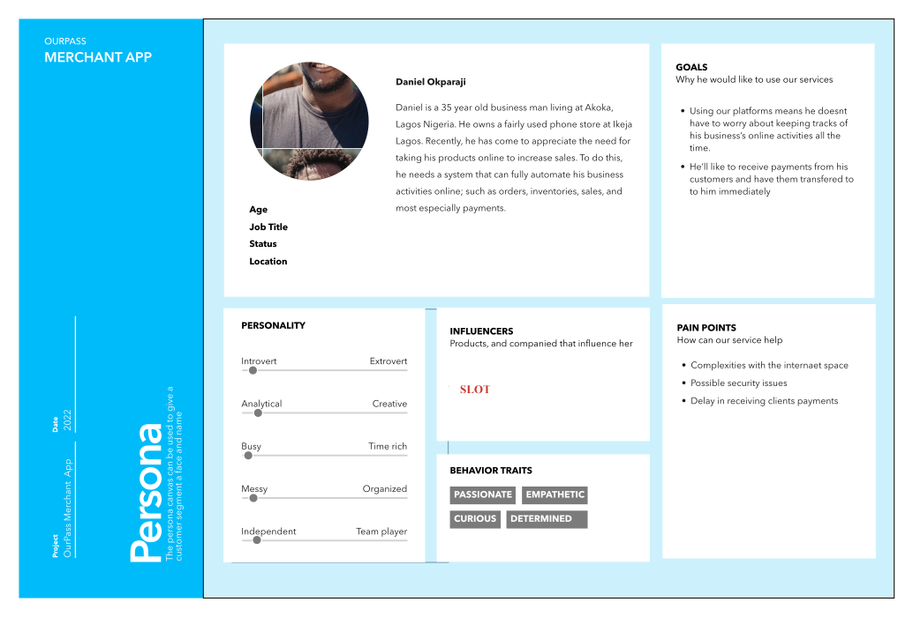
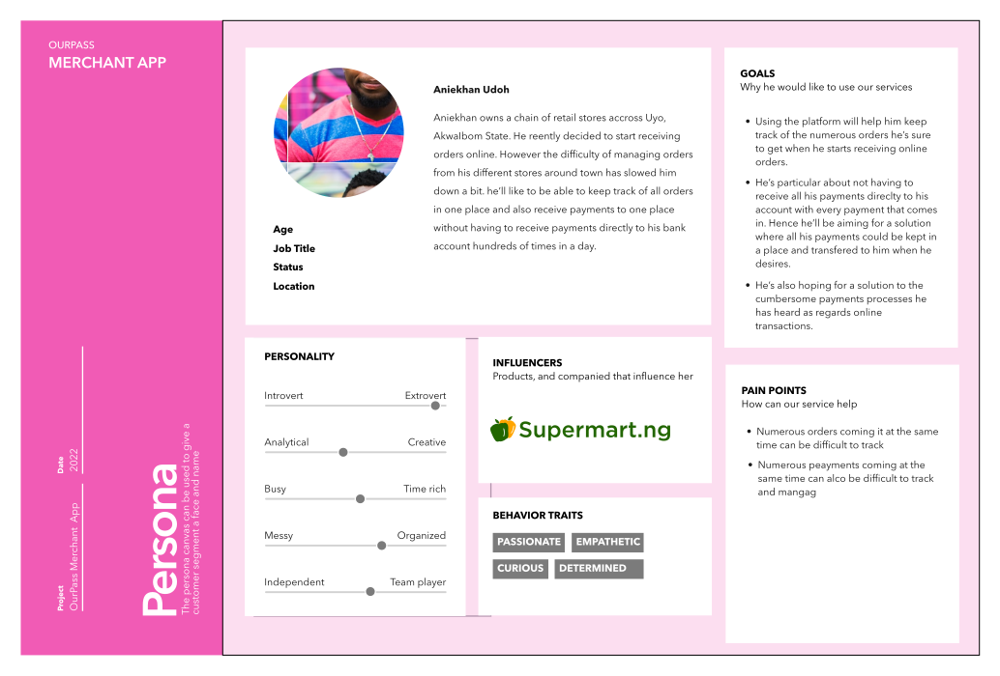
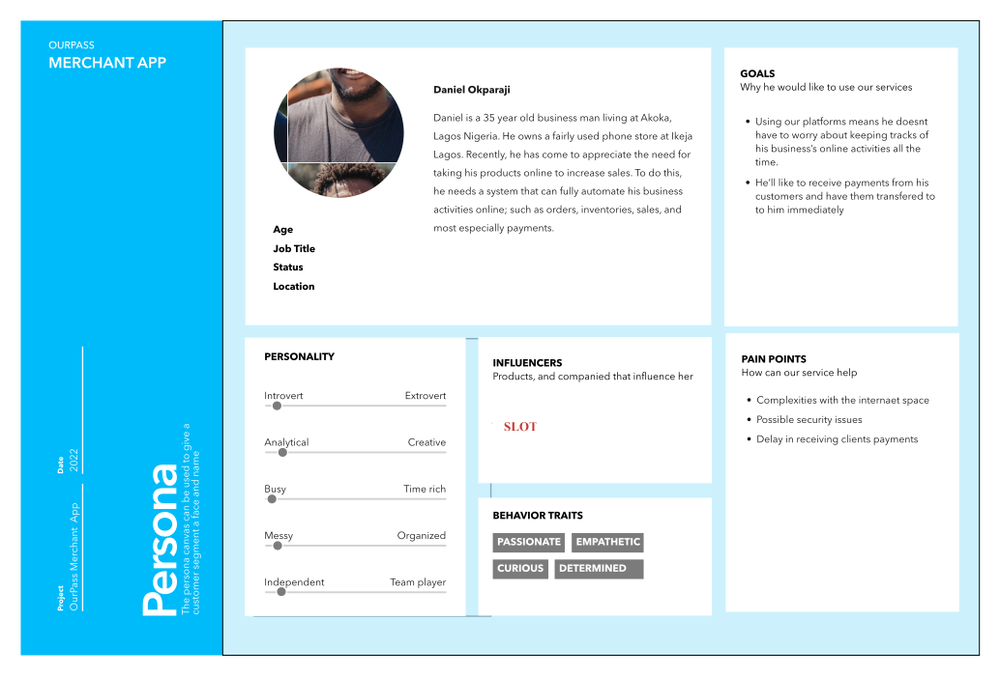
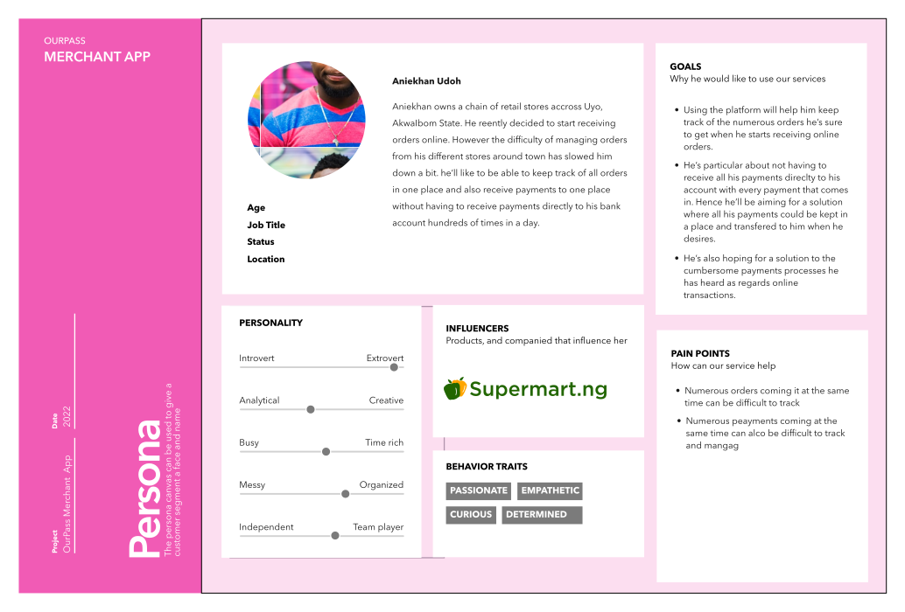
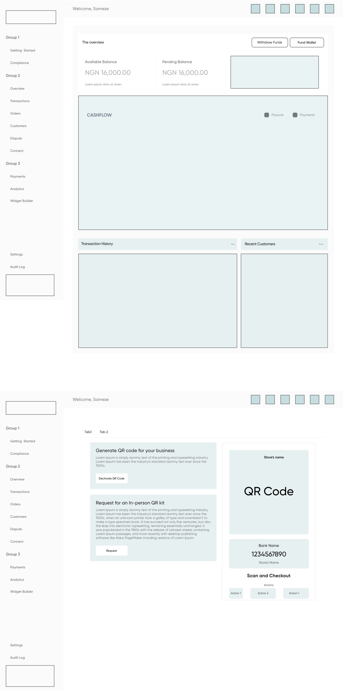

UI/UX Design, UX Research
business.ourpass.co

The OurPass Merchant app was a means for merchants to accept payments via the OurPass one click checkout button and also help merchants track transactions, orders, and basically most business related activities.
Whether your e-commerce platform requires custom OurPass API integration, or already built solutions like Wordpress, Magento, or WooCommerce, Once integrated, The OurPass merchant app would help merchants give their customers secure, fast and easy payment, through it’s one click checkout.
This means customers wouldn’t be put through the rigorous process of filling out long forms at checkout.
Prior to now, we had created the one-click checkout system, and we were eager to take a further step by bringing in merchants into the fold, and creating a system that would help merchants manage business activities, while offering ease of payments to their customers
For this project, I worked alongside another Product designer, a Product Manager and tons of Engineers.

Interviews
At the discovery process of this project, we conducted user interviews to get a well grounded understanding of what we were getting ourselves into, and these interviews guided the bulk of the decisions we made, and the path we followed.
During the interview sessions, we made sure to ask topic specific questions, such as: How do you currently go about receiving payments from your customers, How long do they spend at this stage, How long does it take for you to receive the payments they make, using this current payment method, What is the biggest pain point related to this process. Etc. We interviewed a total of 56 Merchants, ensuring to maintain a balance of age, gender, culture and location.
1. How do you currently go about receiving payments from your customers: Transfer, paypal or paystack, others.
2. How long do they spend at this stage: <10 Sec, <1 Minute, >1Minute.
3. How long does it take for you to receive the payments they make using this current payment method: <10 Sec, <1 Minute, >1Minute.
4. What is the biggest pain point related to this process:
When we were done with the user interviews, we created an affinity diagram to help us discover patterns and connections.
Here are some of the things we found out:
Most Merchants would rather receive payments and manage all their business activities on one platform.
Most merchants already have their platforms integrated with WooCommerce or Magento, and would rather stick with them
Merchants are concerned about losing sales at the point of checkout, and wouldn’t mind an easier way to guarantee completion of sales.
Based on these insights obtained, we decided to create the system with a more efficient checkout process and that would also allow for easy integration into platforms which had already integrated wordpress, magento, WooCommerce, etc into their sites.
Based on the interviews, we set up three different personas, ensuring to refer to them throughout the entire product design process.
 



We mapped out the users steps to see how we could help simplify their journey for them to reach their most important goals with the product.
We decided that to walk in our potential users shoes and see potential problems we needed to create a user journey map to walk us through every part of our potential users journey. We also figured it could be beneficial in helping us go above and beyond for our customers, and finding opportunities to improve the overall experience. This also helped us focus more on our users' motivations and emotions, as we understood that this was a bedrock for building a more customer focused product.

To be honest, we had concluded against wireframes at the initial planning stages, we felt we would be better served by making use of free hand sketches on paper, however to help stakeholders get a better understanding of what we were presenting to them especially on the overview sections, we had to come up with hi-fi wireframes which we used for testing during the early stages.

To be honest, we had concluded against wireframes at the initial planning stages, we felt we would be better served by making use of free hand sketches on paper, however to help stakeholders get a better understanding of wWe had been super pumped up about this project from the word go!, and as such we knew the desire to see the success of this project would surely lead to certain biases, and consequently lead to compromise on quality. Hence we decided we would conduct extensive usability testing, and the goals of the tests were as follows:
1. To remove blinders, expose biases and help us see from our potential users perspective
2. To gain insight into ease of use
3. To help Validate data points
4. To improve quality
Tests were conducted at different stages during the design process, we conducted tests with wireframes, and this helped us with valuable insights that we found handy as we progressed. That we were presenting to them especially on the overview sections, we had to come up with hi-fi wireframes which we used for testing during the early stages.

At some point, we had to design an interface right! (LOL!). The goal was simplicity, accessibility, while not compromising on aesthetics.
During the interview process, we noticed that a lot of our respondents weren’t really tech savvy, and wouldn’t be super excited about anything that involved more than a few clicks however promising it seemed. This guided our design process to ensure that primary functions could be carried out in a click or two, secondary functions never went beyond one or two layers of interactions. I highlight some sections I find most interesting below
Onboarding and Authentications

Overview

Payment Links

The OurPass Mobile app was recently launched, and so far it’s been well received, although we’re not oblivious to the fact that improvements will be made as we gather user feedbacks we’re constantly on the lookout for painpoints as we aim to improve upon the experience.